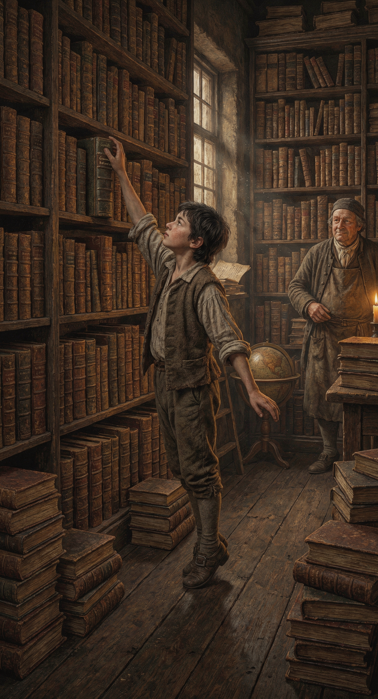
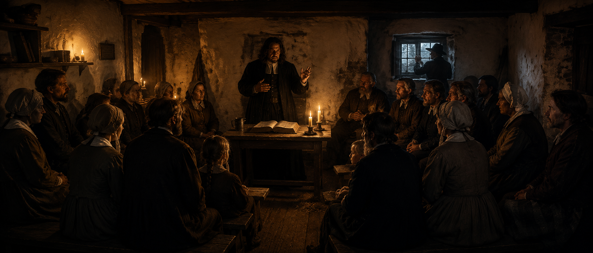
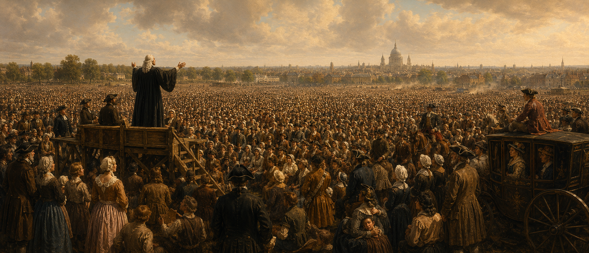

I. Тень 1662 года: Великое изгнание
Духовная родина Джона Гилла родилась за 35 лет до его появления на свет. 24 августа 1662 года вошло в историю как «Чёрный Варфоломеев день». В этот день вступил в силу Акт о единообразии (Act of Uniformity), потребовавший от всех пасторов полного согласия с англиканским молитвенником. Около 2000 пуританских служителей — цвет английской учёности — отказались подчинить совесть государственному диктату и были изгнаны из своих приходов. Среди них были такие титаны, как Ричард Бакстер, Джон Флавел и Томас Уотсон.

Это событие создало нонконформизм как постоянное явление. Пуритане перестали быть «фракцией внутри церкви» — они стали диссентерами вне её. Для семьи Гилла это было не предание старины, а ежедневная реальность: их община была наследницей тех самых «подпольных» собраний (conventicles), которые собирались под страхом штрафов и тюрьмы.
II. Кларендонский кодекс: правовые кандалы
Даже после Акта о веротерпимости 1689 года диссентеры жили в тени Кларендонского кодекса. Четыре закона воздвигли вокруг них правовую стену:

| Закон | Год | Суть и эффект |
|---|---|---|
| Corporation Act | 1661 | Членство в муниципальных советах — только для причащающихся по англиканскому обряду. |
| Act of Uniformity | 1662 | Обязательное использование «Книги общей молитвы». Конец пуританизма в госцеркви. |
| Conventicle Act | 1664 | Запрет собраний более 5 человек не-англикан. Тайная вера. |
| Five Mile Act | 1665 | Изгнанным пасторам запрещено жить ближе 5 миль от городов. Социальная изоляция. |
Именно поэтому Гилл не мог учиться в Оксфорде или Кембридже. До конца XVIII века двери элитного образования были закрыты для баптистов. Его невероятная эрудиция была продуктом Suo Marte (собственных усилий) — ответом на системное исключение из интеллектуальной жизни нации.
III. Солтерс-Холл (1719): доктринальный разлом
Когда Гилл только готовился к лондонскому пасторству, диссентерский мир потряс новый кризис. В феврале 1719 года в Солтерс-Холле собрались 150 пасторов, чтобы решить: обязаны ли служители подписывать декларацию о вере в Троицу. Результат голосования шокировал ортодоксов: 57 против подписки, 53 за.
| Конфессия | За Троицу (подписка) | Против обязательной подписки |
|---|---|---|
| Партикулярные баптисты | 14 пасторов | 2 пастора |
| Генеральные баптисты | 1 пастор | 14 пасторов |
| Индепенденты | Большинство | Меньшинство |
| Пресвитериане | Меньшинство | Большинство |
Партикулярные баптисты (к которым принадлежал Гилл) сохранили верность ортодоксии, в то время как пресвитериане и генеральные баптисты начали дрейф в сторону унитаризма. Гилл пришёл в Хорслидаун в 1720 году, когда рана этого раскола ещё кровоточила. Его бескомпромиссная защита Троицы была плотиной против наводнения ересей.
IV. Кофейная политика
Поскольку диссентеры не могли иметь официальных церковных структур, управление жизнью переместилось в лондонские кофейни. Hanover Coffee House и British Coffee House стали де-факто баптистскими штаб-квартирами. Там решали, кого рукополагать и как мирить общины. Гилл, будучи сторонником строгой независимости поместной церкви, вступил в конфликт с этой «кофейной иерархией», настаивая на авторитете общины над мнением группы столичных пасторов.
V. Саутварк: джин, дым и Евангелие
Саутварк XVIII века — район кожевенников, дубильщиков и портовых рабочих. Над Хорслидауном висел густой угольный дым, а в переулках свирепствовала «джиновая лихорадка» (Gin Craze). Проповедовать здесь означало сталкиваться с нищетой и социальной деградацией каждый день.

Гилл служил в этой гуще жизни: его церковь была в три раза больше средней лондонской общины. Совсем рядом, на Кеннингтон-Коммон, вершились публичные казни и крикетные матчи — и там же гремело Великое пробуждение.
VI. Кеттеринг и книжная лавка
Поговорка отражала метод Гилла: пастор-самоучка, освоивший иврит по грамматике Буксторфа. В мире, где перед диссентерами закрывали двери академий, книжная лавка стала университетом. Гилл превратил свою изоляцию в преимущество, создав систему богословия, основанную на первоисточниках, а не на официальных курсах лекций.